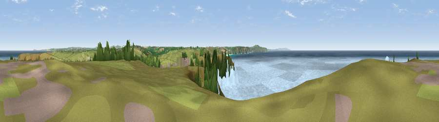

Viewpoint near Holywell
#7786 in England · top 17% of its area beats it · near HolywellWhere it is
The exact computed spot (SW 75925 58875). Click the marker for map links.
The view, rendered

A 360° render of this exact spot computed from the terrain model, tree cover and land cover — summer colours, afternoon light, calibrated against photographs of famous viewpoints. Real trees, hedges and buildings will differ in detail.
The panorama
Grey silhouette: terrain skyline in each direction (720 bearings, Earth curvature and refraction included). Dashed green: skyline with trees (+15 m) and buildings (+8 m) as obstacles. Blue strip: how far the ground is visible on each bearing.
Where the view opens
Wedge length = distance to the farthest visible ground on that bearing (vegetation-aware). Rings at 10, 25 and 50 km.
What fills the view
76% water · 19% grassland · 4% woodland
Angular shares of the visible panorama (visual magnitude), not map area. Landscape diversity 0.31 (0–1 Shannon).
Key numbers
More beautiful places nearby
The staircase of upgrades: each row has a higher view potential than everything closer. Driving times are estimates from straight-line distance, calibrated against real road routing — check an actual route before setting out.
| Place | Direction | Drive | Score |
|---|---|---|---|
| Viewpoint near Holywell | NE · 1 km | ~4 min | 67.2 |
| Viewpoint near Holywell | SSE · 1 km | ~4 min | 71.1 |
| Viewpoint near Perrancoombe | SSW · 6 km | ~12 min | 71.3 |
| Viewpoint near St. Agnes | SSW · 9 km | ~18 min | 72.3 |
| Viewpoint near St. Agnes | SSW · 10 km | ~19 min | 86.0 |
| St Agnes Beacon | SSW · 10 km | ~19 min | 86.1 |
| Viewpoint near Foxhole | E · 22 km | ~37 min | 86.4 |
| Viewpoint near Stenalees | E · 24 km | ~40 min | 88.0 |
50.38696, -5.15354 · source: screening · position refined by local search. Computed location — check access rights before visiting.